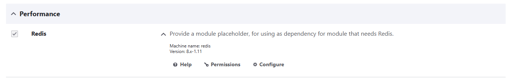
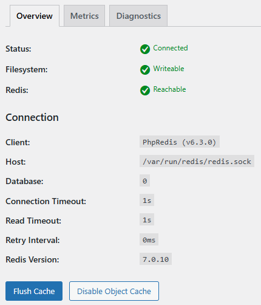

Redis
Redis is a powerful in-memory database primarily used for caching and session management. Due to its speed and flexibility, Redis is widely used in high-performance environments such as web applications, e-commerce platforms, and real-time systems.
This page explains how our Redis setup works, why certain choices were made, and how to make the most of Redis.
1. Our Redis Setup: Two Instances for Optimal Performance
By default, at least two Redis instances run on our servers:
Why two Redis instances?
-
Faster cache processing:
The standard Redis instance on port 6379 is used for temporary cache storage, improving load times and reducing database strain. -
Reliable session storage:
The second Redis instance on port 6378 is set for persistent storage, ensuring session data is not lost on restart. This instance should never be cleared, as it can influence the stability of the application.
Note: While both instances save an RDB file to disk, only the
redisinstance is affected by thetscli redis clearcommand. This ensures persistence after a reboot and helps preserve critical session data even during maintenance or attack scenarios like DDoS.
A. Use the Socket File for Local Performance
If Redis runs locally, we recommend using socket files instead of network connections to reduce overhead and latency.
-
Cache Redis socket file:
/var/run/redis/redis.sock -
Persistent Redis socket file:
/var/run/redis-persistent/redis.sock
Benefit: Socket files improve communication speed and reduce CPU usage.
B. Use Separate Databases for Multiple Websites/Applications
Redis supports multiple databases (0-15). If running multiple websites or applications on the same server, use separate databases:
- Website A →
db 1 - Website B →
db 2
Benefit: Prevents applications from overwriting each other’s cache.
Note: If more databases are needed, these can be configured.
C. Set TTL and Expiry Properly
By default, Redis does not assign a TTL (Time-To-Live) to keys unless explicitly set.
-
Caching keys: Set a TTL for temporary data (e.g., API responses, HTML fragments):
SET key value EX 3600 # Expires after 1 hour -
Sessions: Use a longer TTL, such as 24 hours for user sessions.
-
Critical data: Do not set TTL for important data that must persist.
Benefit: Optimizes memory usage and prevents Redis from filling up completely.
Redis integration
Here you'll find how to enable and integrate Redis for your specific CMS, on our TurboStack environment.
General implementation check
After implementing Redis, you can verify if data is being cached by using the following commands:
redis-cli
127.0.0.1:6379> keys *
(empty array)If empty array displays, it means that nothing has been cached yet. Click around on your website, then try the commands again.
If it remains empty, check if the implementation is correct.
Drupal
To enable the redis module in Drupal, go to Manage > Extend > Performance > Redis and enable it:

You can now verify that the module is acrually connected to the local Redis instance by clicking the Configure button. If it shows Memory being used, it's configured correctly.
If you don't see Memory being used, you might still need to configure Drupal to actually use Redis:
In the following file:
nano public_html/sites/default/settings.phpAdd the following:
$settings['redis.connection']['interface'] = 'PhpRedis';
$settings['redis.connection']['host'] = '/var/run/redis/redis.sock';
$settings['redis.connection']['port'] = 6379;
$settings['redis.connection']['password'] = '';
$settings['redis.connection']['prefix'] = 'ProjectName:';Note: Don't forget to replace 'ProjectName' with your actual project name. and clear all caches after this change.
Setting the default TTL
In the following file:
nano public_html/modules/contrib/redis/src/Cache/CacheBase.phpThe following constant and function can be found:
const LIFETIME_PERM_DEFAULT = 31536000;
...
if (($settings = Settings::get('redis.settings', [])) && isset($settings['perm_ttl_' . $this->bin])) {
$ttl = $settings['perm_ttl_' . $this->bin];
}
else {
// fallback to 31536000 = 1 year
}This means: if perm_ttl_cache_menu is not set, fall back to a TTL of 1 year. This is the general setting for all Redis keys.
If Redis Insight shows you really use only a couple of namespaces that can have a similar TTL, you can just edit this constant variable to the desired value.
Setting the TTL per namespace
You can also set this per namespace in the settings:
nano public_html/sites/default/settings.phpAdd the following:
$settings['redis.settings']['perm_ttl_cache_menu'] = 21600; // 6 hoursNow the 'menu' cache items will have a TTL of 6 hours.
Clearing the old keys in the cache
To purge the old keys, you can use the following commands:
drush cr
tscli redis clearWordpress
To enable the redis plugin, go to the plugins page and search for Redis Object Cache, click on settings. Here you can enable the plugin by clicking Enable Object Cache.

Setting a TTL in object-cache.php
It's important to set a TTL for your cache keys. This will prevent your cache from filling up and causing issues with your website. Currently the plugin does not have the functionality to set a TTL via the interface. You can set it in the config file:
/var/www/XXXX/public_html/wp-content/object-cache.phpIn this file we can find the default TTL that's set for Redis entries when none was given upon creation of the key:
if ( ! defined( 'WP_REDIS_DEFAULT_EXPIRE_SECONDS' ) ) {
define( 'WP_REDIS_DEFAULT_EXPIRE_SECONDS', 0 );
}A TTL of 0 in Redis means 'Never Expire'. Change this value to for example 28800 seconds (8 hours).
To monitor the change, you can use the analysis tool in Redis Insight and sort on TTL.
Tip: you can clear the Redis cache with the ' tscli redis clear ' command.
Setting a TTL outside of object-cache.php
In wordpress one of the more common ways to add something to the cache is by using the 'wp_cache_set' instruction:
wp_cache_set( 'my_key', 'my_value', 'default', 600 );Some plugins set keys to never expire, like the 'posts' keys. To find where a key is added, use the following command:
grep -Ri "wp_cache_set(" | grep 'posts'This will give results like these:
wp-content/plugins/woocommerce-product-search/lib/core/class-woocommerce-product-search-service.php: $cached = wp_cache_set( $cache_key, $posts, self::GET_TERMS_POSTS_CACHE_GROUP, self::get_cache_lifetime() );In this file, it refers to itself ( self::get_cache_lifetime() ) to get the value. The function refers to the constant variable:
const CACHE_LIFETIME = 0;This is again, an infinite TTL. Change it to a more reasonable number.
Note: This needs to be set for all the different namespaces.
Magento2
Configuring Magento2 to use Redis, must be done via the terminal.
Configuration
To configure this, we must edit the app/etc/env.php file.
Incorporate the following code in the file:
'session' => [
'save' => 'redis',
'redis' => [
'host' => '/var/run/redis-persistent/redis.sock',
'port' => '0',
'password' => '',
'timeout' => '3',
'persistent_identifier' => '',
'database' => '1',
'compression_threshold' => '2048', // Set 0 to disable
'log_level' => '2',
'max_concurrency' => '50',
'break_after_frontend' => '5',
'break_after_adminhtml' => '30',
'first_lifetime' => '600',
'bot_first_lifetime' => '60',
'bot_lifetime' => '7200',
'disable_locking' => '0',
'min_lifetime' => '60',
'max_lifetime' => '2592000'
]
],
'cache' =>[
'frontend' => [
'default' => [
'id_prefix' => '104_',
'backend' => 'Magento\\Framework\\Cache\\Backend\\Redis',
'backend_options' => [
'server' => '/var/run/redis/redis.sock',
'port' => '0',
'persistent' => 'db2', // Change this if you're having more Magentos share the Redis
'database' => '2', // Change this if you're having more Magentos share the Redis
'password' => '',
'force_standalone' => '0',
'connect_retries' => '2',
'read_timeout' => '3',
'automatic_cleaning_factor' => '0',
'compress_threshold' => '2048',
// 'compress_data' => '1', // Let Magento pick best value, default 1
// 'compress_tags' => '1', // Let Magento pick best value, default 1
// 'compression_lib' => 'gzip', // Let Magento pick best value , prefer lz4 or snappy
'preload_keys' => [
'104_EAV_ENTITY_TYPES',
'104_GLOBAL_PLUGIN_LIST',
'104_DB_IS_UP_TO_DATE',
'104_SYSTEM_DEFAULT',
],
]
],
'page_cache' => [
'id_prefix' => '104_',
'backend' => 'Magento\\Framework\\Cache\\Backend\\Redis',
'backend_options' => [
'server' => '/var/run/redis/redis.sock',
'port' => '0',
'persistent' => 'db3', // Change this if you're having more Magentos share the Redis
'database' => '3', // Change this if you're having more Magentos share the Redis
'password' => '',
'force_standalone' => '0',
'connect_retries' => '2',
'read_timeout' => '3',
'compress_threshold' => '2048',
// 'compress_data' => '1', // Let Magento pick best value, default 1
// 'compress_tags' => '1', // Let Magento pick best value, default 1
// 'compression_lib' => 'gzip', // Let Magento pick best value , prefer lz4 or snappy
]
]
]
],This tells magento how to connect to Redis, what database to use, the prefix and the default TTL.
Clearing the cache
To clear the cache, you can use the following command:
php bin/magento cache:flushIf caching was not enabled before, you can enable it with the following command:
php bin/magento cache:enableRedis will now be used for caching.
MedusaJS
MedusaJS offers Redis integration, but this is not enabled by default. Enabling and configuring Redis, must be done via the terminal.
We recommend adding a TTL and a custom namespace per shop. This ensures cache data can be differentiated between shops and reduces the chance of completely filling up Redis.
Configuration
To start, we need to add the variables to the .env file in ~/<project>/<shopname>/:
# Enable the new caching system
MEDUSA_FF_CACHING=true
# Redis URL
CACHE_REDIS_URL=redis://127.0.0.1:6379
# Optional settings
CACHE_TTL=28800 # 8 hours in seconds
CACHE_PREFIX=shopname-cache:Now we must enable the feature flag and the Redis module in ~/<project>/<shopname>/medusa-config.ts. To do this, we need to incorporate the following code:
import { defineConfig } from "@medusajs/framework/utils"
export default defineConfig({
featureFlags: {
caching: true, // enable the feature flag
},
modules: [ //enable the caching module
{
resolve: "@medusajs/medusa/caching",
options: {
providers: [
{
id: "caching-redis",
resolve: "@medusajs/caching-redis",
is_default: true,
options: {
redisUrl: process.env.CACHE_REDIS_URL,
ttl: process.env.CACHE_TTL
? parseInt(process.env.CACHE_TTL, 10)
: undefined,
prefix: process.env.CACHE_PREFIX,
},
},
],
},
},
],
})Make your requests cache
MedusaJS supports Redis, but it does not cache the requests bydefault. To enable caching for specific requests, you need to create a workflow that handles caching and a corresponding route for the API.
To make a workflow, create a file called cache-products.ts in ~/<project>/<shopname>/src/workflows/ with the following content:
import {
createWorkflow,
WorkflowResponse,
} from "@medusajs/framework/workflows-sdk"
import { useQueryGraphStep } from "@medusajs/medusa/core-flows"
export const cacheProductsWorkflow = createWorkflow(
"cache-products",
() => {
const { data: products } = useQueryGraphStep({
entity: "product",
fields: ["id", "title"],
options: {
cache: {
enable: true,
providers: ["caching-redis"],
},
},
})
return new WorkflowResponse(products)
}
)This workflow queries the product entity and caches the response in Redis.
To make a route, create a file called route.ts in ~/<project>/<shopname>src/api/cache-product/route.ts with the following content:
import { MedusaRequest, MedusaResponse } from "@medusajs/framework/http"
import { cacheProductsWorkflow } from "../../workflows/cache-products"
export const GET = async (req: MedusaRequest, res: MedusaResponse) => {
const { result } = await cacheProductsWorkflow(req.scope)
.run({})
res.status(200).json(result)
}This route exposes an endpoint (/cache-product) that calls the caching workflow and returns the cached product data.
Now the route and workflow are ready to use, stop the backend process:
pm2 stop <process_name>Build medusa again:
npx medusa buildCopy the .env file from the server to the .medusa/server folder:
cp .env .medusa/server/.envRestarting PM2
To reload these new changes, restart the PM2 process for the backend:
pm2 restart <process_name>The Redis cache should now be used to cache products.